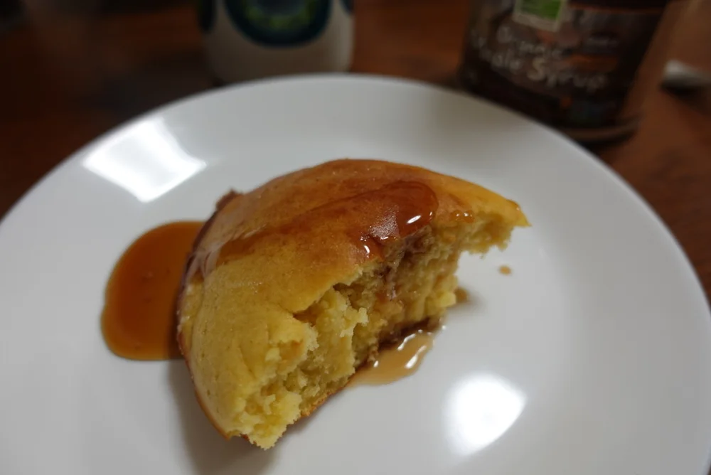
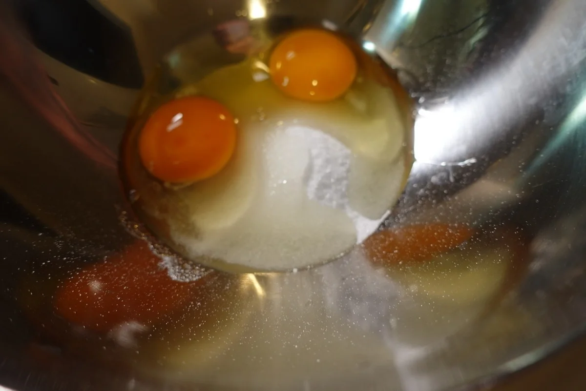

パンケーキ・おやつ
おからパウダーのミニパンケーキ
小さく焼いて楽しむ、おからパウダーのミニパンケーキです。私はこの生地を、ジャムやバターと合わせたり、あんこを挟んだりする食べ方も紹介してきま
米粉とオオバコを使う、もちもちした食感のパンケーキです。私は元記事で、ふんわりもちもちで、お米の香りがどこか団子を思わせる味わいと紹介しました。


オオバコは、食用の粉末を生地に混ぜて使います。元記事には好みで使う材料としての説明もありますが、ここでは5gを入れる配合を載せています。
オオバコは乾いた粉のまま口にしないでください。ほかの材料と十分に混ぜてから調理します。
甘味料は、エリスリトール50gと、砂糖またはラカントS35g程度を分けて記載しています。それぞれで作った時の食感の比較までは示されていません。
この置き換え量は、ほかのパンケーキや団子に共通する割合として使わないでください。
加熱時間は作った時の目安です。容器や調理器具によって仕上がりは変わります。中心まで火が通っていることを確認してください。
おから・オオバコ・米粉のパンケーキの材料・作り方（50kgdiet.com） →
このページは書籍の改訂原稿をもとに掲載しています。元記事は過去の記録のため、材料や表現が異なる場合があります。